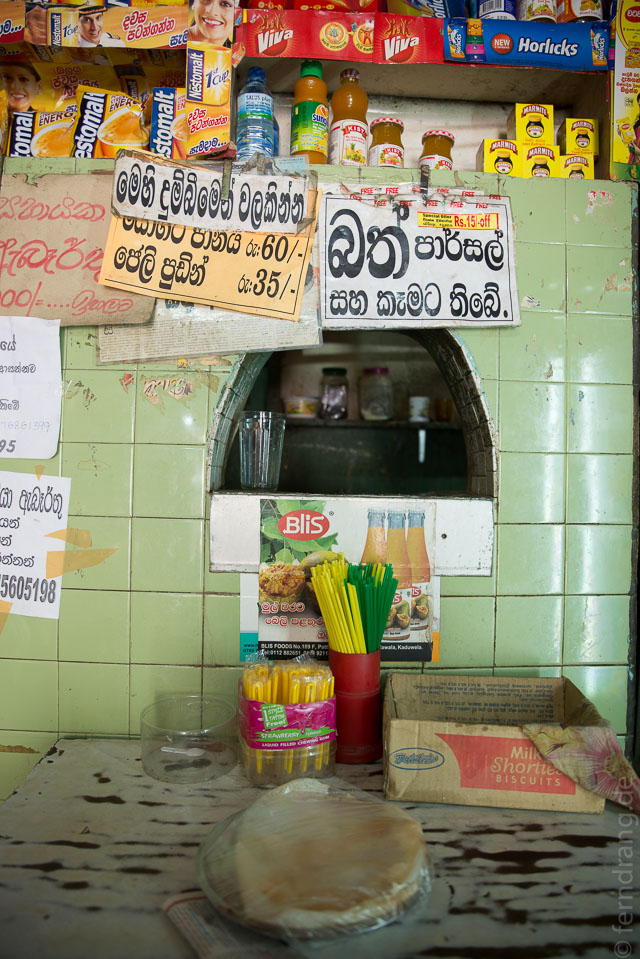
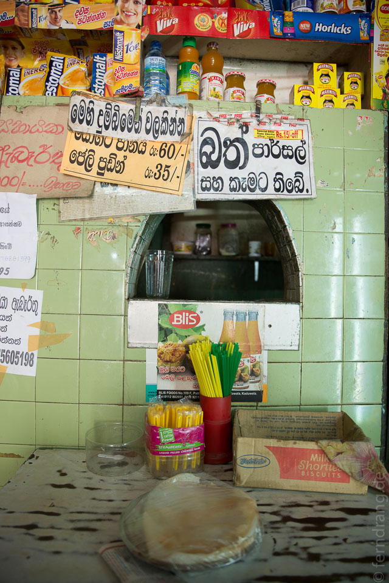
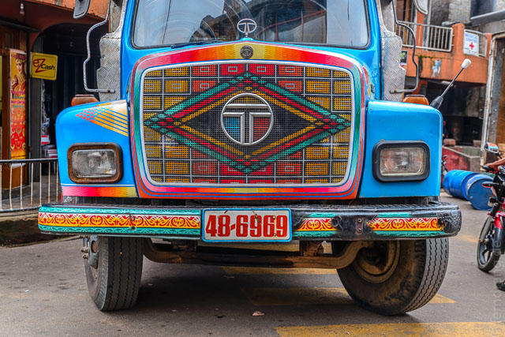
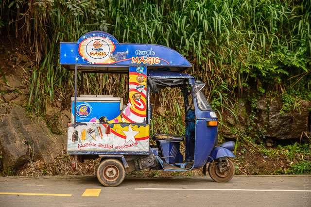
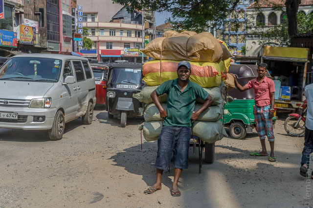

Überall im Land hängen Plakate von President Mahinda, der aussieht wie Eddy Murphy als Messdiener. Da er, wie uns gesagt wurde, mit einem beträchtlichen Teil seines Kabinetts verwandt sein soll, ist unter den Bürgern der Gedanken entstanden, dass er das Wohl des Volkes unter Umständen nur an zweiter Stelle im Auge hat. Die Wahlen im Januar könnten dazu interessantes Feedback geben. Aber er hat mir zum Neujahr eine SMS geschrieben, was ich sehr nett fand.


Slow Food hat hier eine andere Größenordnung. Man kann hier anderthalb Stunden auf ein weich gekochtes Ei warten. Inhaltlich beschränkt sich die Küche auf Rice and Curry, was wie ein Tali funktioniert und zwischen langweilig bis lecker schwankt. Nach ein paar Wochen überkommt einen aber ein Rappel. Abhilfe schaffen die vielen als Büdchen getarnten Teestuben, die süßen Tee und Samosas servieren. Dort werden die Teller mit einer Plastikfolie überzogen, die nach dem Essen einfach ausgewechselt werden. Als Servietten dienen zerschnittene Zeitungen. Auf einer war Lady Di - wir konnten nicht entziffern, ob der Serviettenverbrauch so gering war oder ob Nachrichten eine Weile brauchen bis sie in Sri Lanka ankommen.
 

Busfahren funktioniert extrem gut. Überall gibt es kurzfristige Anschlüsse, auf den Busbahnhöfen wird einem immer schnell weiter geholfen und es kostet fast nichts. Dafür hat man nicht immer einen Sitzplatz (im Gegensatz zum Bahnfahren, wo man nie einen hat). Die Fahrer stehen aber ganz oben im Machtgefüge des Straßenverkehrs. Beobachter könnten den Eindruck gewinnen, Busse hätten Rechtsverkehr und der Rest der Fahrzeuge Linksverkehr, so kriminell sind zum Teil die überholmanöver.
Der Brötchenmann fährt in seiner Rikscha mit montierter Vitrine durch die Orte und spielt dabei "Für Elise" durch Lautsprecher. Das scheint eine überregionale Konvention zu sein (der Eismann hat eine andere Melodie). Wir haben dieses Insiderwissen schmerzvoll erlangt als der dambullaer Brötchenmann seine laufende Rikscha vor unserem Guesthouse abgestellt hat und für eine nervenzerreißende Viertelstunde verschwand.
 